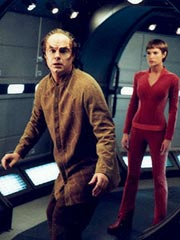
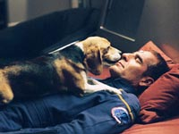
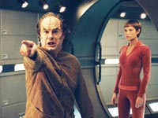
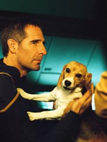

|
MANCHETE
DO EPISÓDIO
Episódio
introspectivo traz dr.
Phlox para o primeiro plano
Episódio
anterior | Próximo
episódio
Sinopse:
 Enquanto
se dirigem para Azati Prime, a tripulação da Enterprise se
confronta com uma anomalia espacial transdimensional, cuja
passagem através se mostrará fatal para a tripulação. Como
não há tempo hábil para se contornar a anomalia, uma idéia de
Phlox é posta em prática, com a tripulação indo para
hibernação, sendo mantidos em proteção, enquanto Phlox,
graças a sua imunidade aos efeitos por ser um denobuliano, irá
cuidar da nave e da tripulação em hibernação, durante este
período. Apesar das preocupações sobre a falta de treinamento e
procedimentos da Frota Estelar, a tarefa é confiada a Phlox, e
Trip e vários outros lhe dão um crash-course em tudo o que ele
precisa saber para suas tarefas durante os quatro dias de viagem,
com a nave em impulso, uma vez que Trip não recomenda o uso de
dobra enquanto na anomalia.
Phlox aproveita a oportunidade para fazer alguns tours pela
tranquila e deserta nave, passeando com Porthos e escrevendo
algumas cartas para o Dr. Lucas. Apesar disto tudo, ele sente uma
certa tensão pelo inusitado da situação, mas o denobulano fica
um pouco mais sossegado após perceber que T’pol também ainda
está consciente, uma vez que vulcanos aparentemente também são
imunes aos efeitos da anomalia. Após algum tempo, Phlox estranha
alguma movimentação e ruídos pela nave, e apesar de a vulcana
não dar muito crédito a esta impressão do doutor, Phlox acaba
ficando face-a-face com um Xindi-Insectóide quando ele fora
investigar alguns ruídos no quarto de Hoshi. Ele escapa do
encontro com o Xindi, e insiste com T’pol para fazerem uma busca
completa pela nave por este e outros eventuais intrusos.
Phlox também tem algumas visões pertubadoras, vendo Hoshi
consciente chegar até seu quarto, em péssimo estado, como se
estivesse se desfazendo, mas isto subitamente termina, e ela ainda
está no seu aposento, em hibernação. Entrementes, T’pol
percebe que ela também não parece estar imune a alguns efeitos
colaterais ela mesma, pois não está conseguindo controlar
completamente suas emoções, e não está em condições de
apenas ela cuidar da nave, depois que Phlox sugeriu que ela o
colocasse em hibernação. Desta forma, ambos não tem muita
escolha a não ser continuarem conscientes.
 A
vulcana e o denobuliano também tem que decidirem o que fazer
após descobrirem que aquela região do espaço está se
expandindo, e que não terão muito mais tempo. Desta forma, eles
tem que levarem a Enterprise para velocidade de dobra, e depois de
muito esforço por Phlox, eles conseguem velocidade de dobra e a
nave deixa a região, pois T’pol se mostrou tão afetada que
não conseguia mais se lembrar de nada do que sabia sobre
propulsão de dobra. Mas Phlox descobre a real razão disto após
a tripulação acordar, uma vez que T’pol também estivera em
hibernação o tempo todo - a T’pol com a qual interagiu o tempo
todo era apenas mais uma das alucinações que ele mesmo estava
tendo.
Comentários:
"Doctor's Orders"
é um episódio inteligente. Além de ser totalmente
introspectivo -- o que é um fenômeno raro em Enterprise --,
ele ainda consegue pregar uma peça no telespectador que vira de
cabeça para baixo a avaliação que ele até então fazia do
segmento.
Trata-se de um "high concept" com conteúdo, se é que
pode existir algo do tipo. A premissa é tão simples que dá
pena: Phlox é obrigado a cuidar da nave sozinho e começa a ficar
louco. Simples assim.
Mas não tão depressa. O drama e o senso de responsabilidade
imputados ao médico Denobulano são tão fortes que, mesmo
através de suas alucinações, ele continua labutando para salvar
a nave e seus colegas de tripulação. E esse elemento é muito
bem escondido da audiência, sendo revelado apenas na última cena
do episódio: Phlox acompanha T'Pol, supostamente sua única
companhia durante a travessia da região alterada da Extensão
Délfica, até seus aposentos, para descobrir que a Vulcana na
verdade passou o tempo todo sedada, em coma induzido, exatamente
como o resto da tripulação. A T'Pol com quem ele interagiu
durante todo o drama era na verdade outra de suas alucinações.
 Num
nível mais superficial, essa revelação explica o porquê de
T'Pol parecer tão "mal escrita" quanto parece às vezes
durante este episódio. Tudo bem que ela pudesse estar sofrendo os
efeitos das alterações espaço-temporais, com a gradual perda de
controle das emoções e dificuldade de se manter em foco. Mas
nada parece justificar que ela não saiba absolutamente nada sobre
como reiniciar os motores de dobra da Enterprise, ou mesmo como
monitorar a tripulação, assim que Phlox chega à conclusão de
que está alucinando e não pode mais cumprir a função.
Quando olhamos essas cenas à luz do fato de que aquela T'Pol é
apenas um artifício da mente de Phlox, tudo muda de figura, e nos
maravilhamos com o fato de que a presença dela nada mais foi do
que um mecanismo inconsciente que o cérebro do médico encontrou
para fazer com que ele cumprisse as tarefas necessárias à
sobrevivência da tripulação. Num lance raro na ficção em
geral, temos acesso ao inconsciente de um personagem.
Esse, sem dúvida, é o aspecto mais interessante e intrigante de
todo o episódio. Mais do que toda a narrativa de Phlox em carta
ao doutor Lucas (um artifício já usado antes em outro grande
episódio envolvendo o personagem, "Dear
Doctor"), o que mais fala do médico são suas
próprias alucinações. Seus medos, suas preocupações e suas
aspirações estão todos lá.
T'Pol funciona como a "razão" do médico --não é de
todo estranho que seu inconsciente a tenha escolhido para o papel,
dado o extremo racionalismo dos Vulcanos. Mas há mais: é com
T'Pol que Phlox sente maior identificação, sendo ela a única
outra alienígena numa nave cheia de humanos. Faz sentido,
portanto, que sua companhia imaginária ganhe a imagem da Vulcana...
tudo que ela diz, entretanto, não passa de um eco dos próprios
pensamentos de Phlox --seus dilemas são repartidos em dois
personagens, de uma maneira natural e inteligente, o que expõe
completamente sua alma ao telespectador.
 Claro,
um episódio dessa natureza não seria nada, não fosse o talento
dos atores que o interpretam. No elenco de Enterprise, se
há alguém que mereça esse papel, trata-se de John Billingsley.
Desde o começo, John tem conseguido transmitir uma dignidade e
uma sabedoria diferenciada a Phlox que resgatou seu personagem de
uma potencial (até provável, em alguns casos) conversão em
Neelix, versão 2.0, fazendo do bom doutor um dos mais cativantes
personagens da série.
Aqui ele se sobressai, mesmo com toda a maquiagem que recobre seu
rosto, transmitindo todas as emoções pelas quais passa o médico
com um misto de humor, maravilhamento e pavor. Uma atuação
excepcional.
Jolene Blalock também é exigida (em menor escala, claro), mas se
sai muito bem como "a mente racional/alternativa" de
Phlox, encarnada em T'Pol. Sua interação com Billingsley sempre
foi produtiva e atingiu um ponto alto durante este episódio.
Claro, Porthos também merece um destaque especial. Com certeza,
tem tudo para levar o próximo Emmy de melhor cão em série
dramática.
Por fim, é sempre bom vermos os efeitos especiais entrando em
segundo plano, numa série que nos acostumou a ofertar mais
imagens bonitas do que roteiros inteligentes. Felizmente, a taxa
de sucesso na escrita cresceu significativamente na terceira
temporada.
Fechando a conta, "Doctor's Orders" é um
episódio que fascina a posteriori. Você vê os primeiros 40
minutos como meramente "divertidos", e o final provoca
um giro de 180 graus, exigindo uma reavaliação de tudo que foi
visto a partir de um novo ponto de vista. O exercício não só
vale a pena, como faz o episódio subir muito no conceito do
telespectador. E conquistar a audiência no minuto final é o
verdadeiro segredo para deixar o gostinho de "quero
mais". Nesse contexto, o episódio marca um verdadeiro gol de
placa.
Citações:
Phlox - "Perhaps we are
letting our imaginations run away with us, hmm? I should have never let
Mr. Tucker talk me into watching The Exorcist last week."
("Talvez estejamos deixando nossas imaginações nos levarem
demais, huh? Talvez eu não devesse ter permitido ao Sr. Tucker me
convencer em assistir O Exorcista semana passada.")
Phlox - "I’m a physician, not an engineer!"
("Eu sou um médico, e não um engenheiro!")
Phlox - "Are you
suggesting I read the manual?"
("Você está sugerindo que eu devo ler o manual?")
T'Pol - "He also said, and I quote, Phlox did one hell of a job."
("Ele também disse, e eu cito, Phlox fez um baita de um
trabalho.")
Trivia:
 Apenas John Billingsley e Jolene Blalock foram necessários para todos
os sete dias de fotografia principal do episódio.
Apenas John Billingsley e Jolene Blalock foram necessários para todos
os sete dias de fotografia principal do episódio.
Rick Berman, sobre Doctor's Orders, comentou que se tratava de um
episódio consideravelmente amedrontador, que toma grande vantagem do
ótimo John Billingsley.
Ficha
técnica:
Escrito por Chris Black
Direção de Roxann Dawson
Exibido em 18/02/2004
Produção: 068
Elenco:
Scott
Bakula como Jonathan Archer
Jolene Blalock como
T'Pol
John Billingsley
como Phlox
Anthony Montgomery
como Travis Mayweather
Connor Trinneer como
Charlie 'Trip' Tucker III
Dominic Keating como
Malcolm Reed
Linda Park como Hoshi Sato
Episódio
anterior | Próximo
episódio
|